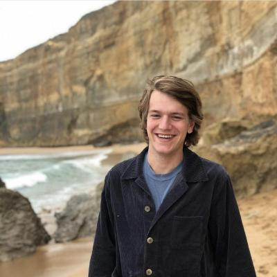

For checking out the rest of my little web page.
I'm Casper, a 27 year old software developer at the start of his journey into the IT landscape. After having worked in hospitality for about 4 years I'm very excited to get into something new.
After having worked in different types of restaurants, from burger places to fine dining, I started getting into coding about a year ago and I've been loving it ever since.
My main experiences are back-end related. Using C and C++ with some Python and Rust from time to time. I look forward to learning a lot more and broadening my horizon with Switchfully and I'm even more excited to start working as Software Engineer at UZ Brussel thereafter.
If you want to check out some of my projects thus far feel free to check out my Github profile and give me a follow if you want to keep up with my projects.